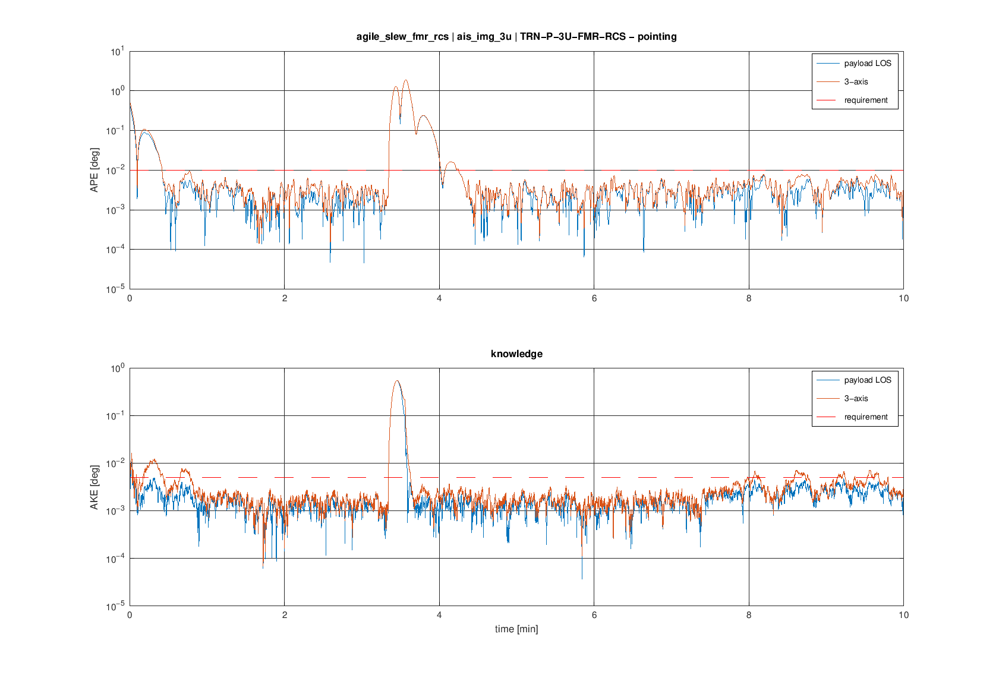
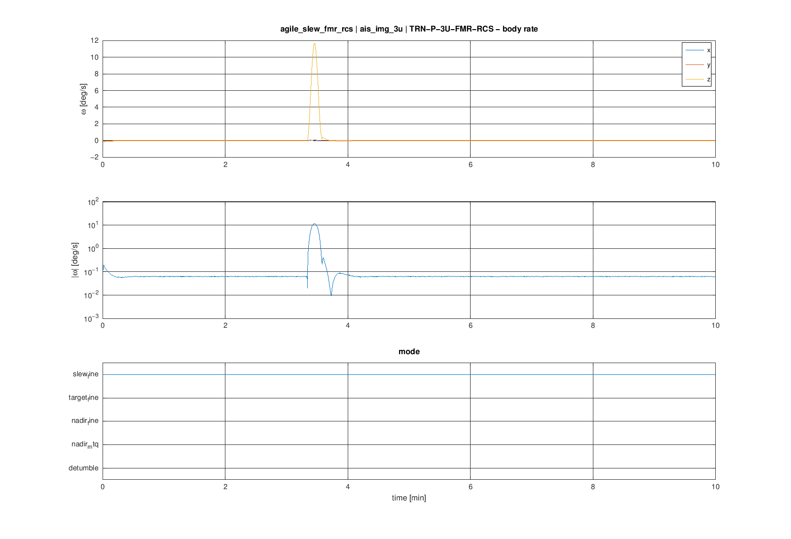
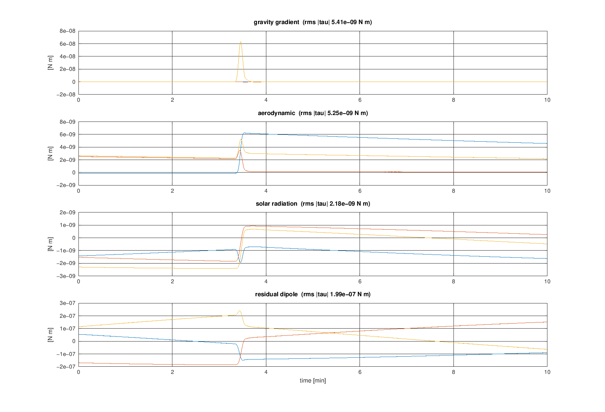
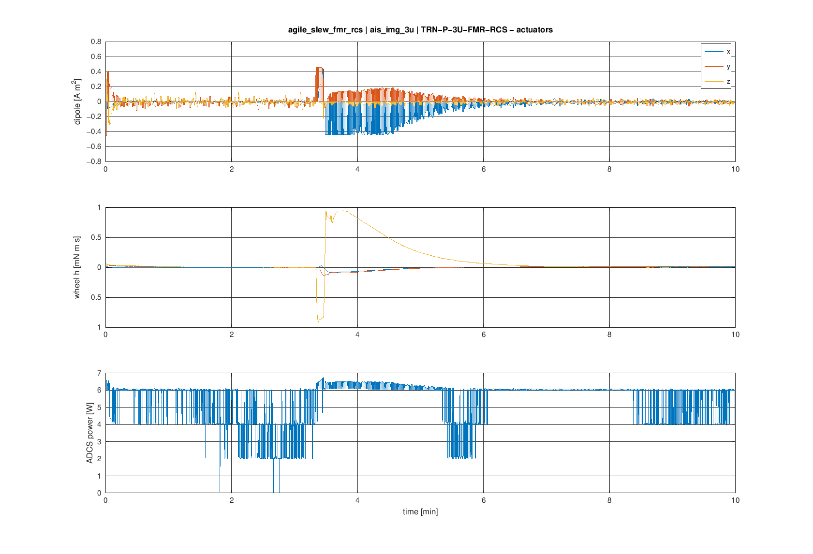
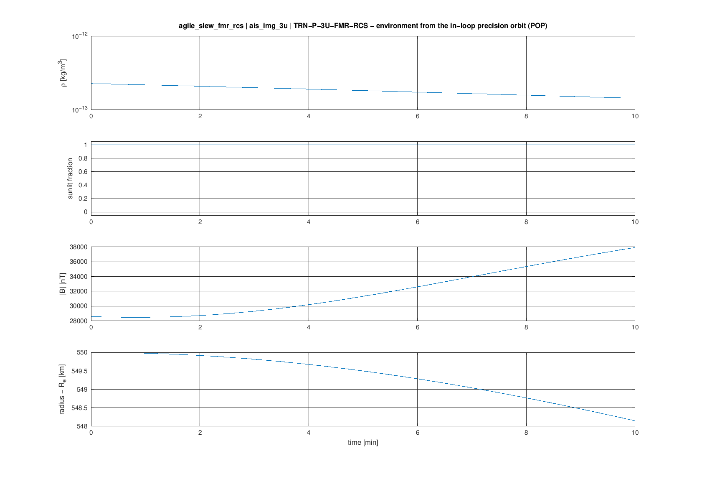
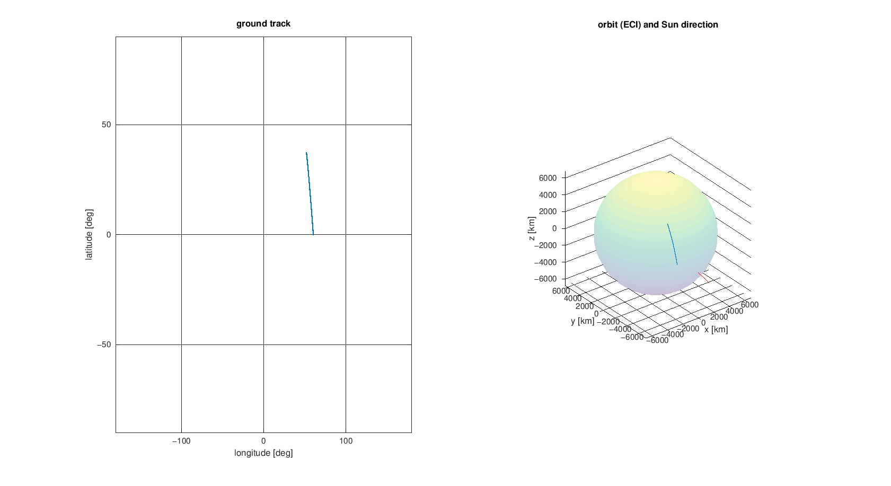

asils-1.0.0 (adcs-case/1, POP v51 in-loop) · case ais_img_3u (3U imaging satellite — fine pointing 0.01 deg, SSO 10:00 550 km) · product TRN-P-3U-FMR-RCS · seed 1 · owner: Agastya
| metric | value | required | verdict |
|---|---|---|---|
| settle_time_after_slew | 39.9 s | NaN | – |
| ape_los_on_target_p9973 | 0.007225 deg | 0.01 | PASS |
| wheel_momentum_peak | 0.0009452 N m s | NaN | – |






Copyright (c) 2026 Agastya. All rights reserved.